Economy, Calculations, Data
import impl as u
import pandas as pd
pd.set_option('display.max_columns', None)
GDP
GDP calc seen below is computed as annualized quarterly growth rate, quarter growth compared to previous quarter, annualized.
df = u.get_fred(1945,'GDPC1')
df['growann'] = ( ( (1+df.pct_change())**4 )-1.0 )*100.0
print (df['growann'].tail(5))
2025-01-01 -0.648483
2025-04-01 3.838033
2025-07-01 4.375396
2025-10-01 0.482248
2026-01-01 1.621137
Name: growann, dtype: float64
df = u.get_fred(1970,'GDPC1')
df['gdpyoy'] = (df.GDPC1 - df.GDPC1.shift(4)) / df.GDPC1.shift(4) * 100.0
print (df[['gdpyoy']].tail(6))
df = u.get_fred(1970,'CPIAUCNS')
df['inf'] = (df.CPIAUCNS - df.CPIAUCNS.shift(12)) / df.CPIAUCNS.shift(12) * 100.0
df['inf'] = df['inf'].interpolate()
print (df[['inf']].tail(6))
gdpyoy
2024-10-01 2.399788
2025-01-01 2.019273
2025-04-01 2.080467
2025-07-01 2.335168
2025-10-01 1.989300
2026-01-01 2.566845
inf
2025-11-01 2.735084
2025-12-01 2.677081
2026-01-01 2.386431
2026-02-01 2.414113
2026-03-01 3.256420
2026-04-01 3.810845
Wages and Unemployment
Wages
df3 = u.get_fred(1950,['ECIWAG'])
df3 = df3.dropna()
df3['ECIWAG2'] = df3.shift(4).ECIWAG
df3['wagegrowth'] = (df3.ECIWAG-df3.ECIWAG2) / df3.ECIWAG2 * 100.
print (df3['wagegrowth'].tail(4))
df3['wagegrowth'].plot(title='Wage Growth')
plt.savefig('wages.png')
DATE
2024-10-01 3.710462
2025-01-01 3.369434
2025-04-01 3.559666
2025-07-01 3.584369
Name: wagegrowth, dtype: float64
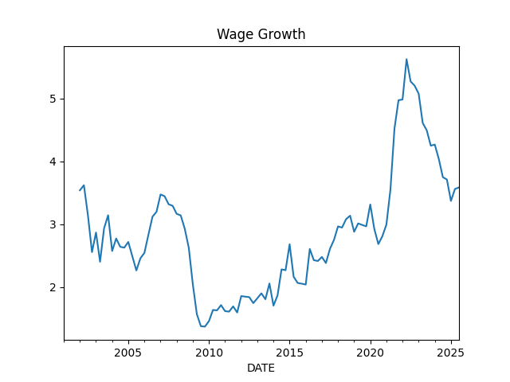
Difference Between Wage Growth YoY and Total Payrolls, see [5]
df = u.get_fred(1986,['PAYEMS','AHETPI'])
df['nfpyoy'] = (df.PAYEMS - df.PAYEMS.shift(12)) / df.PAYEMS.shift(12) * 100.0
df['wageyoy'] = (df.AHETPI - df.AHETPI.shift(12)) / df.AHETPI.shift(12) * 100.0
df[['wageyoy','nfpyoy']].plot()
plt.axvspan('01-09-1990', '01-07-1991', color='y', alpha=0.5, lw=0)
plt.axvspan('01-03-2001', '27-10-2001', color='y', alpha=0.5, lw=0)
plt.axvspan('22-12-2007', '09-05-2009', color='y', alpha=0.5, lw=0)
plt.axvspan('03-01-2020', '09-01-2020', color='y', alpha=0.5, lw=0)
plt.title('Wage Growth YoY and Total Payrolls')
print (df['wageyoy'].tail(5))
print (df['nfpyoy'].tail(5))
plt.savefig('pay-wage.png')
2025-12-01 3.816047
2026-01-01 3.734979
2026-02-01 3.722888
2026-03-01 3.546099
2026-04-01 3.666774
Name: wageyoy, dtype: float64
2025-12-01 0.073271
2026-01-01 0.204716
2026-02-01 0.079591
2026-03-01 0.154063
2026-04-01 0.158375
Name: nfpyoy, dtype: float64
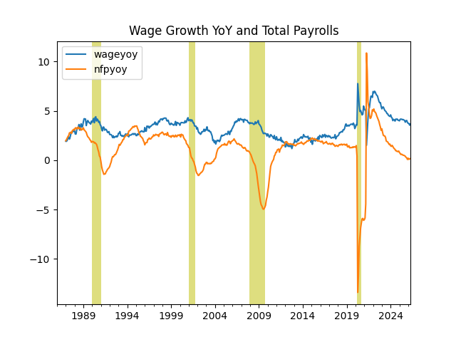
Compensation and Profits Comparison [5]
1) US Employee Compensation as a % of GVA of Domestic Corporations
2) US Corporate Profits as a % of GDP
df = u.get_fred(1965, ['A442RC1A027NBEA','A451RC1Q027SBEA','CP','GDP']).interpolate()
df['profgdp'] = (df.CP / df.GDP)*100.0
df['compgva'] = (df.A442RC1A027NBEA / df.A451RC1Q027SBEA)*100.0
u.two_plot(df, 'profgdp','compgva')
print (df[['profgdp','compgva']].tail(5))
plt.axvspan('01-12-1969', '01-11-1970', color='y', alpha=0.5, lw=0)
plt.axvspan('01-11-1973', '01-03-1975', color='y', alpha=0.5, lw=0)
plt.axvspan('01-01-1980', '01-11-1982', color='y', alpha=0.5, lw=0)
plt.axvspan('01-09-1990', '01-07-1991', color='y', alpha=0.5, lw=0)
plt.axvspan('01-03-2001', '27-10-2001', color='y', alpha=0.5, lw=0)
plt.axvspan('22-12-2007', '09-05-2009', color='y', alpha=0.5, lw=0)
plt.savefig('compprof.png')
profgdp compgva
2025-01-01 11.103680 56.805512
2025-04-01 11.008092 56.056481
2025-07-01 11.548463 54.812580
2025-10-01 12.068435 53.783457
2026-01-01 11.904120 53.783457
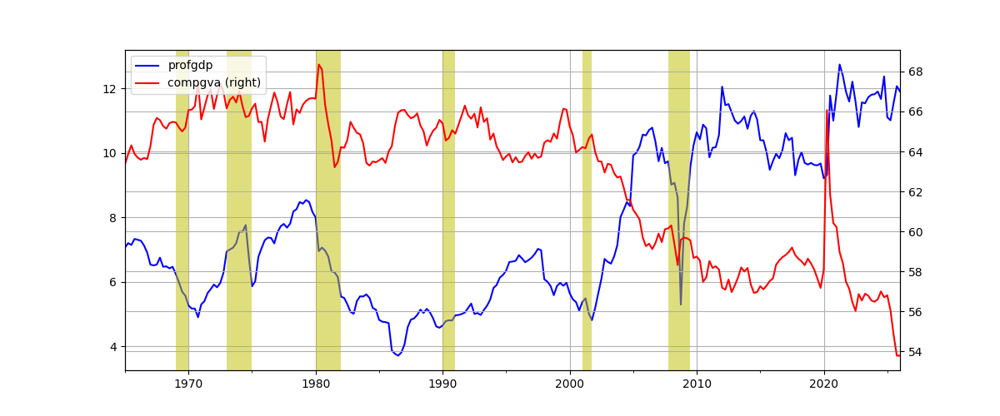
Unemployment
Calculation is based on [2]
cols = ['LNS12032194','UNEMPLOY','NILFWJN','LNS12600000','CLF16OV','UNRATE','U6RATE']
df = u.get_fred(1986,cols)
df['REAL_UNEMP_LEVEL'] = df.LNS12032194*0.5 + df.UNEMPLOY + df.NILFWJN
df['REAL_UNRATE'] = (df.REAL_UNEMP_LEVEL / df.CLF16OV) * 100.0
pd.set_option('display.max_columns', None)
df1 = df.loc[df.index > '2005-01-01']
df1 = df1.interpolate()
df1[['UNRATE','U6RATE','REAL_UNRATE']].plot()
plt.title('Unemployment Rate')
print (df1[['UNRATE','U6RATE','REAL_UNRATE','REAL_UNEMP_LEVEL']].tail(5))
plt.savefig('unemploy.png')
UNRATE U6RATE REAL_UNRATE REAL_UNEMP_LEVEL
DATE
2025-08-01 4.30 8.1 9.431625 16104.50
2025-09-01 4.40 8.1 9.251960 15845.00
2025-10-01 4.45 8.4 9.482982 16254.25
2025-11-01 4.50 8.7 9.714004 16663.50
2025-12-01 4.40 8.4 9.552174 16381.50
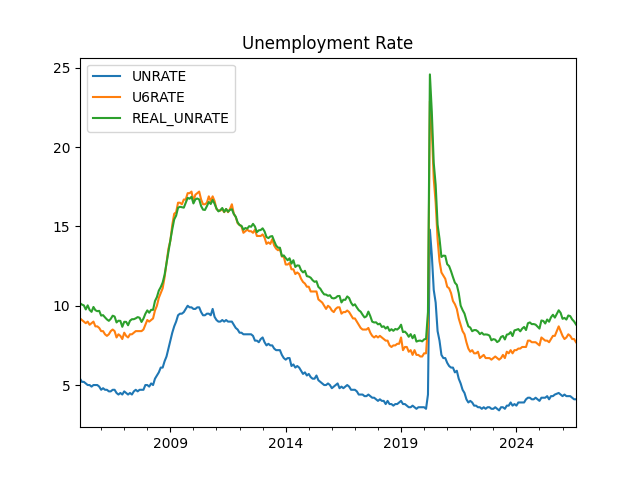
Vacancy rate, job openings divided by unemployed people
df = u.get_fred(2000, ['JTSJOL','UNEMPLOY'])
df = df.dropna()
df['VRATE'] = df.JTSJOL / df.UNEMPLOY
df.VRATE.plot()
print (df.VRATE.tail(3))
plt.savefig('vrate.png')
DATE
2025-08-01 0.979268
2025-09-01 1.006969
2025-11-01 0.918391
Name: VRATE, dtype: float64
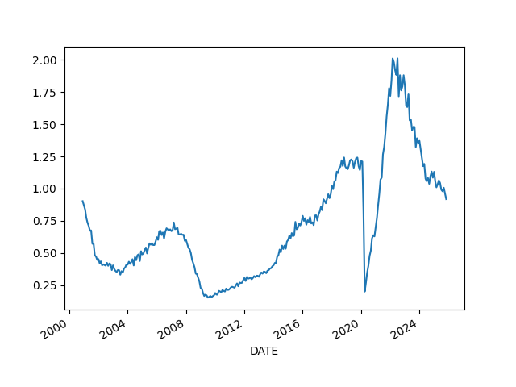
Companies
Profit Margins
Divide (1) by (2) as suggested in [4],
(1) Corporate Profits After Tax (without IVA and CCAdj) (CP)
(2) Real Final Sales of Domestic Product (FINSLC1)
df = u.get_fred(1980, ['CP','FINSLC1']); df = df.interpolate()
df = df.dropna()
df['PM'] = df['CP'] / df['FINSLC1'] * 100.0
df.PM.plot()
print (df.tail(4))
plt.savefig('profitmargin.png')
CP FINSLC1 PM
2025-04-01 3355.897 23765.563 14.120839
2025-07-01 3591.344 24029.136 14.945789
2025-10-01 3792.207 24049.784 15.768154
2026-01-01 3792.207 24144.450 15.706330
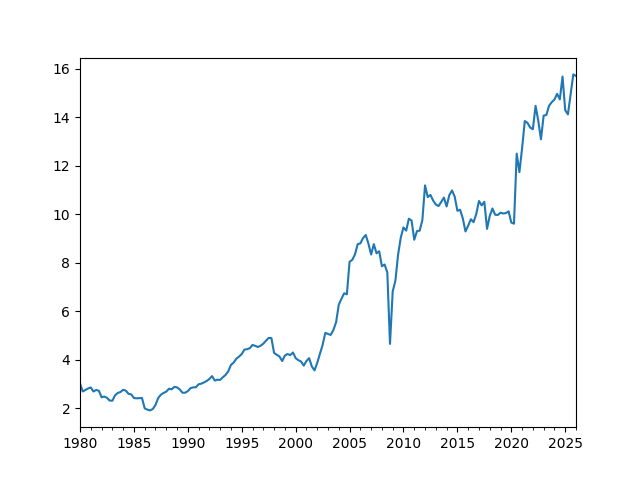
Finance
Dollar
df = u.get_yahoo_ticker(1980, "DX-Y.NYB").interpolate()
df.tail(1000).plot()
plt.grid(True)
plt.savefig('dollar.png')
DX-Y.NYB
2026-05-07 98.250000
2026-05-08 97.839996
2026-05-10 97.908497
2026-05-11 97.976997
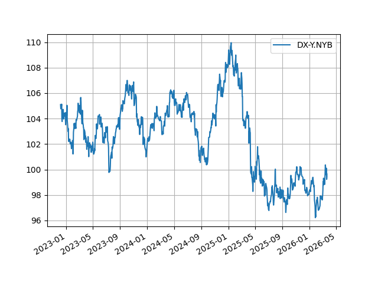
Schiller P/E (Price to Earnings)
df = pd.read_csv('../../mbl/2026/schiller.csv',index_col='Date',parse_dates=True)
df['real_price'] = df['S&P Comp P'] * df['CPI'].iloc[-1] / df['CPI']
df['real_earnings'] = df['Earnings E'] * df['CPI'].iloc[-1] / df['CPI']
df['real_earnings_10y_avg'] = df['real_earnings'].rolling(window=120).mean()
df['CAPE'] = df['real_price'] / df['real_earnings_10y_avg']
df['CAPE'].tail(400).plot()
plt.savefig('schiller2.jpg')
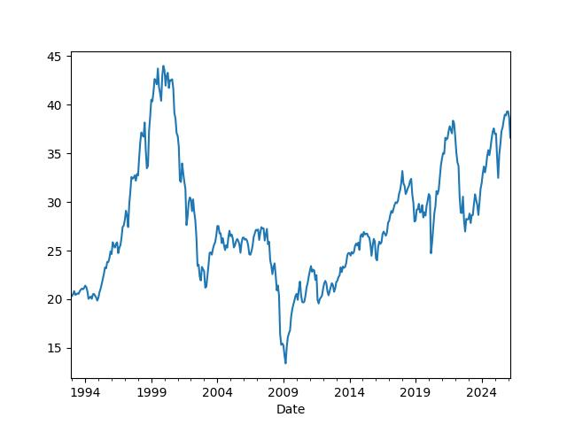
Overlay Schiller's P/E ratio on top SP 500 10-year returns [1] since 1920s. Lows and highs arrive 10 years after the market is most expensive and cheapest, respectively. The two graphs should show perfect reverse correlation.
df = pd.read_csv('../../mbl/2024/sp500.csv',index_col='Date',parse_dates=True)
df['schiller'] = pd.read_csv('../../mbl/2024/schiller.csv',index_col='Date',parse_dates=True)['Schiller']
df = df[df.index > '1940-01-01']
df['SPY10'] = df.SPY.shift(-12*10)
df['chg'] = ((df.SPY10 - df.SPY) / df.SPY)*100
u.two_plot2(df.chg, 'spy', df['schiller'], 'schiller')
plt.savefig('schiller.jpg')
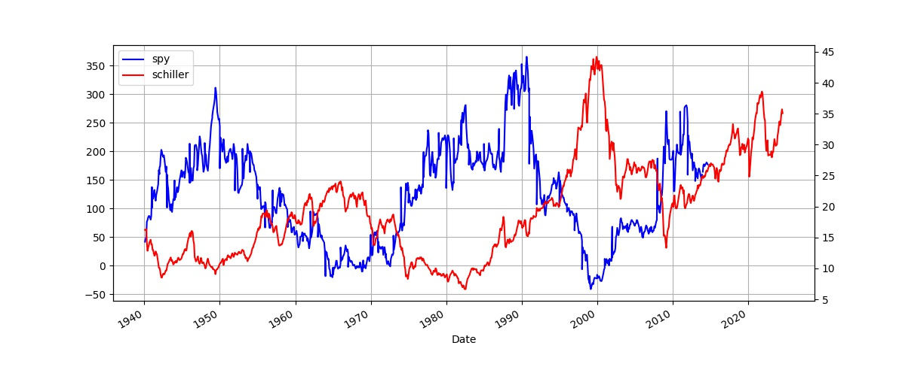
Junk Bond Yields
df = u.get_fred(1980,'BAMLH0A2HYBEY')
print (df.tail(6))
df.plot()
plt.savefig('junkbond.png')
BAMLH0A2HYBEY
2026-04-30 7.14
2026-05-01 7.07
2026-05-04 7.14
2026-05-05 7.11
2026-05-06 7.01
2026-05-07 7.09
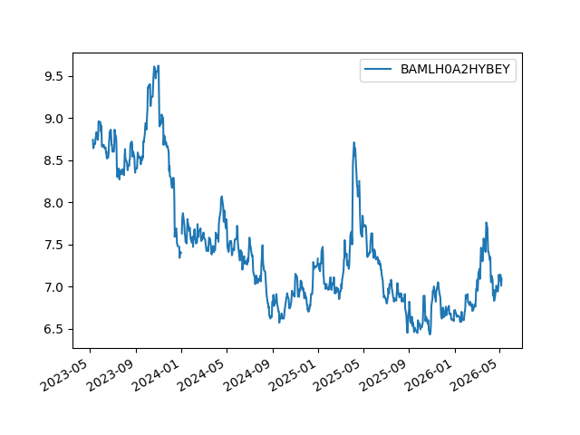
3 Month, 2 and 10 Year Treasury Rates
df = u.get_fred(2020,['DGS3MO','DGS2','DGS10','FEDFUNDS'])
df = df.interpolate()
df.plot()
#plt.axvspan('01-09-1990', '01-07-1991', color='y', alpha=0.5, lw=0)
#plt.axvspan('01-03-2001', '27-10-2001', color='y', alpha=0.5, lw=0)
#plt.axvspan('22-12-2007', '09-05-2009', color='y', alpha=0.5, lw=0)
print (df.tail(3))
plt.savefig('treasuries.png')
DGS3MO DGS2 DGS10 FEDFUNDS
2026-05-05 3.69 3.93 4.43 3.64
2026-05-06 3.69 3.87 4.36 3.64
2026-05-07 3.69 3.92 4.41 3.64
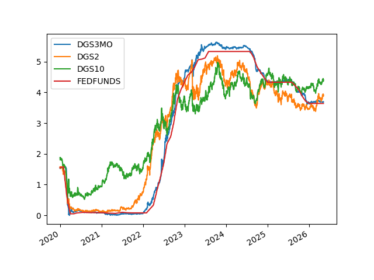
Treasury Curve
df = u.get_fred(1980,['DGS2','DGS10'])
df = df.interpolate()
df['inv'] = df.DGS10 - df.DGS2
df['inv'].plot(grid=True)
print (df['inv'].tail(4))
plt.axvspan('01-09-1990', '01-07-1991', color='y', alpha=0.5, lw=0)
plt.axvspan('01-03-2001', '27-10-2001', color='y', alpha=0.5, lw=0)
plt.axvspan('22-12-2007', '09-05-2009', color='y', alpha=0.5, lw=0)
plt.savefig('tcurve.jpg')
2026-05-04 0.50
2026-05-05 0.50
2026-05-06 0.49
2026-05-07 0.49
Name: inv, dtype: float64
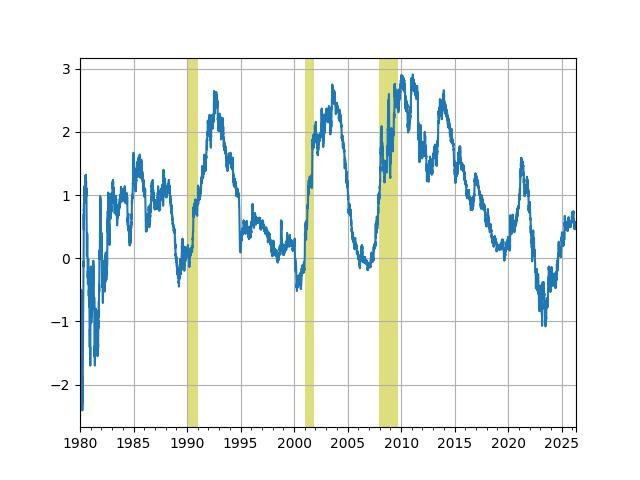
df = u.get_fred(2008,['DGS2','DGS10'])
df = df.interpolate()
df['inv'] = df.DGS10 - df.DGS2
df['inv'].plot(grid=True)
print (df.inv.tail(4))
plt.savefig('tcurve2.jpg')
DATE
2026-01-19 0.675
2026-01-20 0.700
2026-01-21 0.660
2026-01-22 0.650
Name: inv, dtype: float64
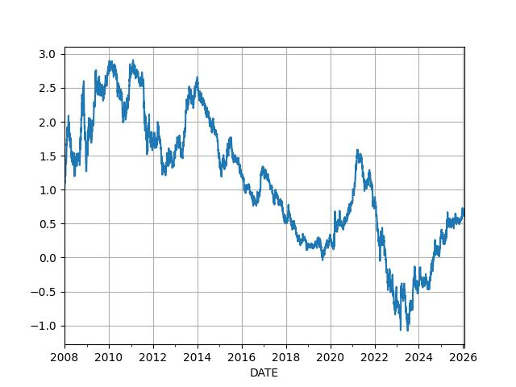
VIX
df = u.get_yahoo_ticker(2000,"^VIX")
df.plot()
plt.axvspan('22-12-2007', '09-05-2009', color='y', alpha=0.5, lw=0)
print (df.tail(7))
plt.savefig('vix.png')
^VIX
2026-05-01 16.990000
2026-05-04 18.290001
2026-05-05 17.379999
2026-05-06 17.389999
2026-05-07 17.080000
2026-05-08 17.190001
2026-05-11 18.240000
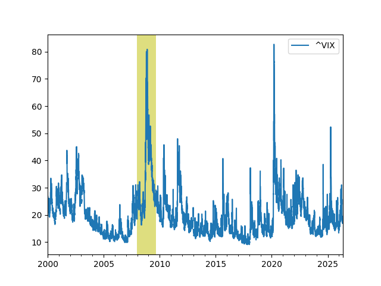
Fear Index - Rolling 200d Correlation
df = u.get_yahoo_tickers(2010, ["^SP100","SPY","^SPXEW"])
returns = df.pct_change()
rolling_corr = returns.rolling(window=200).corr()
plot_df = pd.DataFrame(index=df.index)
plot_df['OEX-SPX'] = rolling_corr.xs('^SP100', level=1)['SPY']
plot_df['SPW-OEX'] = rolling_corr.xs('^SPXEW', level=1)['^SP100']
plot_df['SPX-SPW'] = rolling_corr.xs('SPY', level=1)['^SPXEW']
plt.figure(figsize=(12, 7))
plt.plot(plot_df['OEX-SPX'], color='black', label='OEX-SPX', linewidth=1.5)
plt.plot(plot_df['SPW-OEX'], color='#00adef', label='SPW-OEX', linewidth=1.5)
plt.plot(plot_df['SPX-SPW'], color='#135a28', label='SPX-SPW', linewidth=1.5)
plt.ylim(0.5, 1.1)
plt.grid(axis='y', alpha=0.3)
plt.legend(loc='upper center', bbox_to_anchor=(0.5, -0.1), ncol=3, frameon=False)
for spine in ['top', 'right', 'left']:
plt.gca().spines[spine].set_visible(False)
plt.tight_layout()
plt.savefig('fear.jpg')
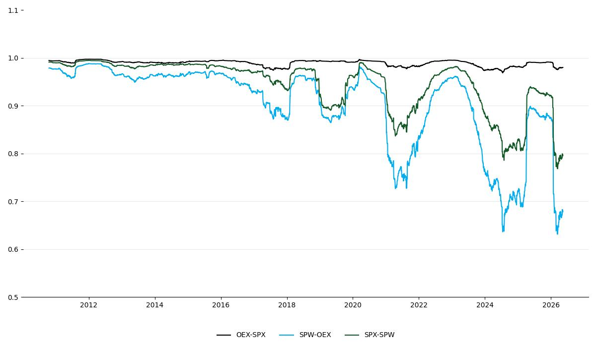
Wealth, Debt
Private Debt to GDP Ratio
df = u.get_fred(1960,['GDPC1','QUSPAMUSDA'])
df = df.interpolate()
df['Credit to GDP'] = (df.QUSPAMUSDA / df.GDPC1)*100.0
df['Credit to GDP'].plot()
plt.axvspan('01-09-1990', '01-07-1991', color='y', alpha=0.5, lw=0)
plt.axvspan('01-03-2001', '27-10-2001', color='y', alpha=0.5, lw=0)
plt.axvspan('22-12-2007', '09-05-2009', color='y', alpha=0.5, lw=0)
plt.axvspan('2020-02-01', '2020-05-01', color='y', alpha=0.5, lw=0)
plt.savefig('creditgdp.png')
print (df['Credit to GDP'].tail(4))
DATE
2024-10-01 177.039165
2025-01-01 178.115572
2025-04-01 177.673874
2025-07-01 175.781853
Freq: QS-OCT, Name: Credit to GDP, dtype: float64
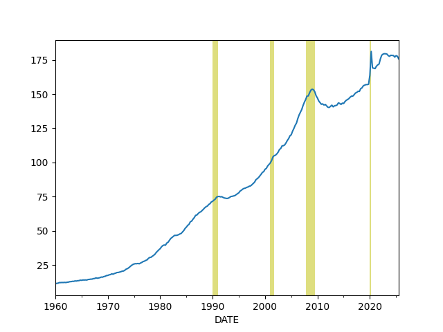
Total Consumer Credit Outstanding as % of GDP
df = u.get_fred(1980,['TOTALSL','GDP'])
df = df.interpolate(method='linear')
df['debt'] = df.TOTALSL / df.GDP * 100.0
print (df.debt.tail(4))
df.debt.plot()
plt.axvspan('01-09-1990', '01-07-1991', color='y', alpha=0.5, lw=0)
plt.axvspan('01-03-2001', '27-10-2001', color='y', alpha=0.5, lw=0)
plt.axvspan('22-12-2007', '09-05-2009', color='y', alpha=0.5, lw=0)
plt.axvspan('2020-02-01', '2020-05-01', color='y', alpha=0.5, lw=0)
plt.savefig('debt.png')
2025-12-01 16081.263402
2026-01-01 16030.888061
2026-02-01 16058.652842
2026-03-01 16136.675191
Freq: MS, Name: debt, dtype: float64
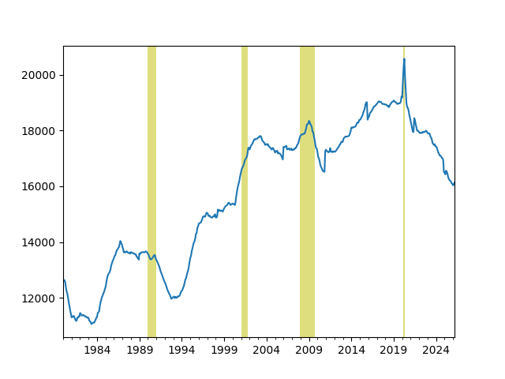
Wealth Inequality - GINI Index
Code taken from [3]
def gini(pop,val):
pop = list(pop); pop.insert(0,0.0)
val = list(val); val.insert(0,0.0)
poparg = np.array(pop)
valarg = np.array(val)
z = valarg * poparg;
ord = np.argsort(val)
poparg = poparg[ord]
z = z[ord]
poparg = np.cumsum(poparg)
z = np.cumsum(z)
relpop = poparg/poparg[-1]
relz = z/z[-1]
g = 1 - np.sum((relz[0:-1]+relz[1:]) * np.diff(relpop))
return np.round(g,3)
cols = ['WFRBLT01026', 'WFRBLN09053','WFRBLN40080','WFRBLB50107']
df = u.get_fred(1989,cols)
df = df.interpolate()
p = [0.01, 0.09, 0.40, 0.50]
g = df.apply(lambda x: gini(p,x),axis=1)
print (g.tail(4))
g.plot()
plt.xlim('1990-01-01','2026-01-01')
plt.axvspan('1993-01-01','1993-01-01',color='y')
plt.axvspan('2001-01-01','2001-01-01',color='y')
plt.axvspan('2009-01-01','2009-01-01',color='y')
plt.axvspan('2017-01-01','2017-01-01',color='y')
plt.axvspan('2021-01-01','2021-01-01',color='y')
plt.axvspan('2025-01-01','2025-01-01',color='y')
plt.text('1990-07-01',0.44,'HW')
plt.text('1994-10-01',0.46,'Clinton')
plt.text('2003-12-01',0.47,'W')
plt.text('2011-01-01',0.44,'Obama')
plt.text('2018-01-01',0.42,'DJT')
plt.text('2020-03-01',0.48,'Biden')
plt.text('2023-06-01',0.42,'DJT')
plt.savefig('gini.png')
2024-10-01 0.440
2025-01-01 0.440
2025-04-01 0.440
2025-07-01 0.442
dtype: float64
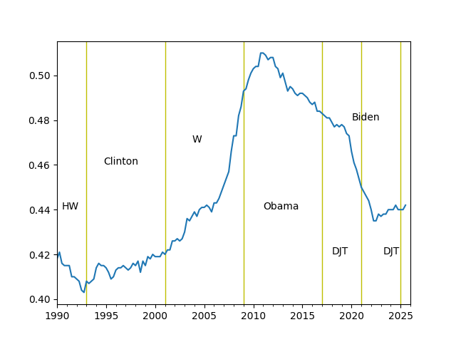
Percentage of Wealth Held by Top 10%
cols = ['WFRBLT01026', 'WFRBLN09053','WFRBLN40080','WFRBLB50107']
df = u.get_fred(1970,cols)
df = df.interpolate()
df['Total'] = df['WFRBLT01026'] + df['WFRBLN09053'] + df['WFRBLB50107'] + df['WFRBLN40080']
df['Top 10%'] = (df['WFRBLT01026'] + df['WFRBLN09053']) * 100 / df.Total
df['Bottom 50%'] = (df['WFRBLB50107'] * 100) / df.Total
print (df[['Top 10%','Bottom 50%']].tail(4))
df[['Top 10%']].plot()
plt.ylim(50,100)
plt.savefig('top10-2.jpg')
Top 10% Bottom 50%
2024-10-01 67.410590 2.480988
2025-01-01 67.182930 2.490884
2025-04-01 67.506484 2.482505
2025-07-01 68.139687 2.458570
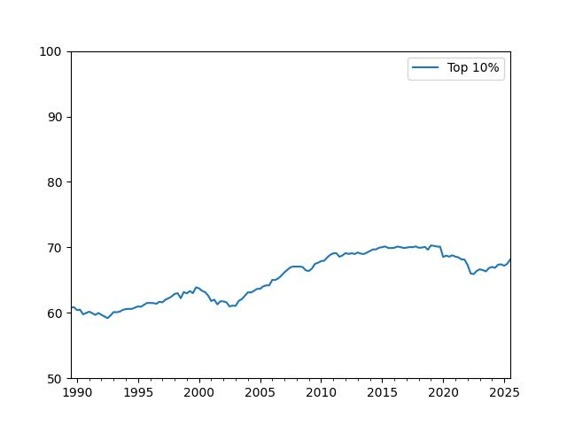
Living Standards Index
targets = ['MSPUS','HLTHSCPCHCSA','CUSR0000SEEB','CPIAUCSL']
income = ['MEHOINUSA646N']
df = u.get_fred(1992, income + targets)
df['MEHOINUSA646N'] = df['MEHOINUSA646N'].interpolate(method='linear')
df = df.interpolate(method='linear')
ratios_df = df.copy()
for col in targets:
ratios_df[col] = ratios_df[income[0]] / ratios_df[col]
normalized_df = ratios_df[targets] / ratios_df[targets].iloc[0]
ratios_df['super_index'] = normalized_df.mean(axis=1)
ratios_df['super_index'].plot(title='Living Standards Index', grid=True)
plt.savefig('livingst.jpg')
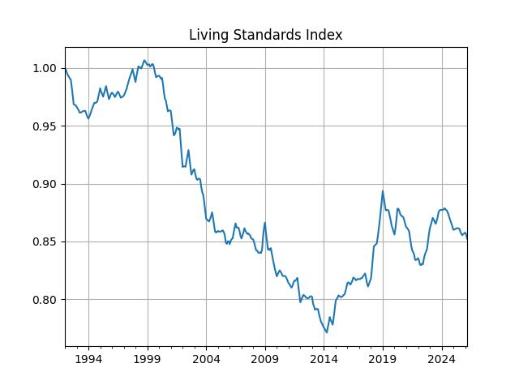
Real Estate
Median house prices
df = u.get_fred(1992,"MSPUS")
df.plot()
print (df.tail(3))
plt.savefig('medhouse.jpg')
MSPUS
DATE
2024-10-01 419300
2025-01-01 423100
2025-04-01 410800
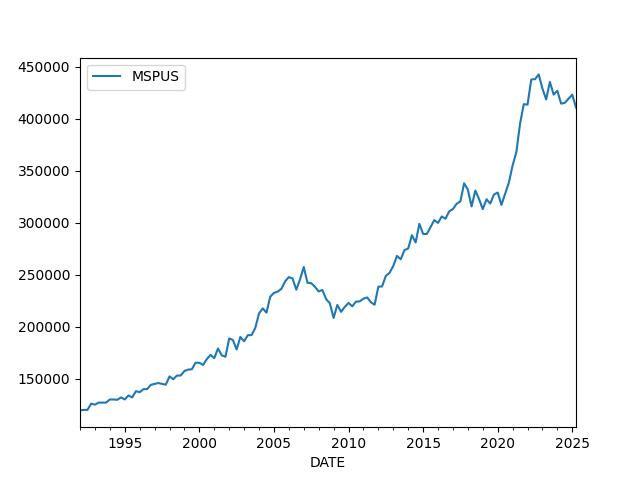
Foreign
Chinese Exports
df = u.get_fred(2010,['XTEXVA01CNM667S']); df.plot()
plt.savefig('exchina.jpg')
print (df.tail(5))
XTEXVA01CNM667S
2025-08-01 3.177898e+11
2025-09-01 3.158886e+11
2025-10-01 3.083828e+11
2025-11-01 3.232409e+11
2025-12-01 3.237949e+11
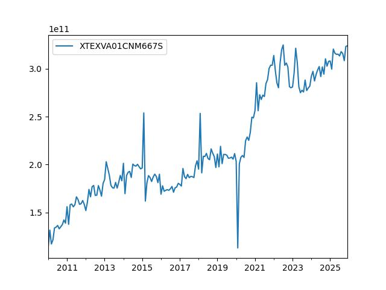
References, Notes
[1] Schiller
[2] Komlos
[3] Mathworks
[5] Hedgeye